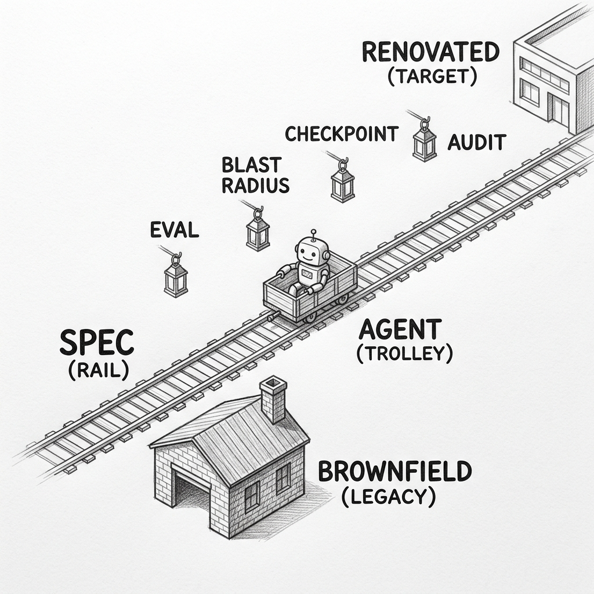
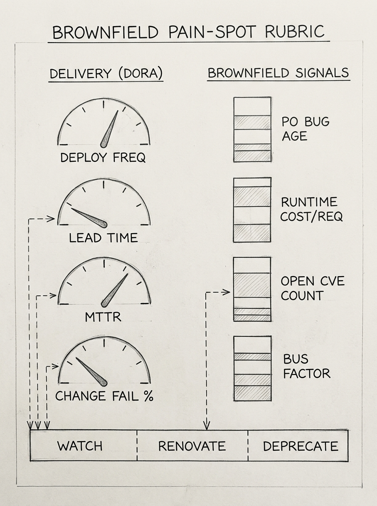
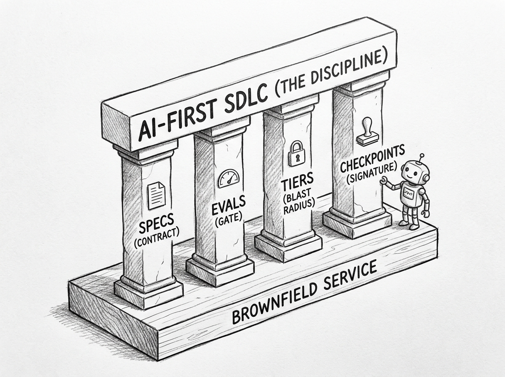
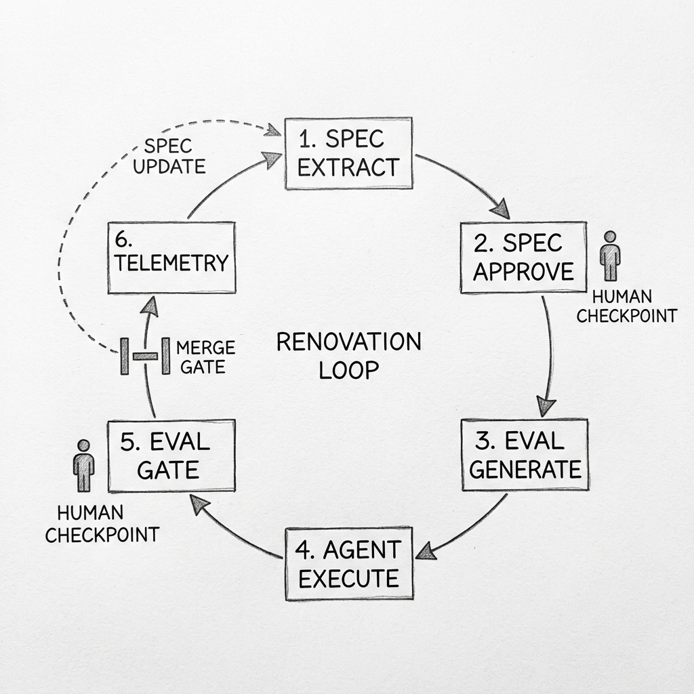

![Hand-drawn pencil schematic in landscape orientation. Seven renovation cycles of varying sizes scattered organically across the upper portion of the canvas — two large (ATLAS, PHOENIX), three medium (NEPTUNE, MERIDIAN, TITAN), and two small (ORION, AURORA). Each cycle is a closed circular loop with six numbered stations spaced around its circumference and curved pencil arrows flowing clockwise, including a return arrow from station 6 back to station 1 that completes the cycle. Each cycle is labeled with its codename in hand-lettered ALL CAPS. Below all the cycles, a single horizontal beam runs across labeled PORTFOLIO PLATFORM with five small icons: a gear for ORCHESTRATION, an eye-with-graph for OBSERVABILITY, a play-button-with-checklist for EVAL RUNNER, a ledger book for AUDIT, and a key for SECRETS.](images/streamlining-portfolio-schematic.jpg)
Every established software company is putting AI inside its SDLC right now. The decisions left to make are which legacy products it touches first, how the work is verified, and what gets signed before it ships. A repeatable renovation methodology — specs as the contract, evals as the gate, the audit trail as the deliverable — is what turns those decisions into something a portfolio of fifty or five hundred services can run on.
The methodology is not just built around the agent. The agent is one piece of it. The spec, the eval, the human checkpoints, and the agentic SDLC the renovation lives inside are what let the work scale across an established company's portfolio of products and services.

A brownfield portfolio is a graveyard of decisions made when the team, platform, and customer were different. Triage starts with measurement. DORA's four delivery metrics separate services that bleed money from services that only look old.2 Below the "high" band on two of four is a candidate.

Layered on top, brownfield-specific signals decide the path: customer bugs aging past ninety days, runtime spend twice the sibling-service median, any critical CVE older than seven days, single-owner code holding most of a service's churn. A third layer comes from behavioural code analysis — Tornhill / CodeScene-style hotspot ranking surfaces the files in the top one percent of churn that also carry high complexity, where renovation will repay itself fastest.
Five paths follow: full rebuild, strangler-fig, encapsulate-and-extend, feature-extend in place, or deprecate. AI lowers per-service extraction cost, so strangler-fig becomes viable for services once too expensive to peel apart. It does not move the rebuild line — the Strangler Fig pattern's 2024 update reaffirms gradual replacement over big-bang rewrite,3 and unspecified behaviour is what AI is worst at. For services touching EU AI Act high-risk obligations, AI pushes away from rebuild — encapsulate-and-extend buys regulatory time before the August 2026 enforcement date.
Picking a path is the first decision. The renovation that follows needs to land inside a standing agentic SDLC, not a one-time project — the same loop has to run on the next legacy service, and the one after that. What that standing SDLC looks like is the next section.
"AI-first" is not "AI-assisted with extra steps." The honest definition is operational: the spec and the eval are the contract surface, and the agent works against that surface. Four practices distinguish the discipline.

Specs are machine-readable. GitHub Spec Kit, AWS Kiro Specs, and Anthropic's Agent Skills converge on the same shape — a few files humans author and agents execute against. Kiro Specs are three artifacts: requirements.md with EARS-notation acceptance criteria,5 design.md, and tasks.md.4 EARS notation itself came from Alistair Mavin's work at Rolls-Royce in 2009 and is now used by Airbus, Bosch, Honeywell, NASA, and Siemens. The contract surface predates the agent; the agent just has a stricter compiler.
Harnesses are per-product and dual-purpose. Each renovation pipeline runs inside an agent harness scoped to one product or service. The same harness supports day-to-day development — worktree isolation, branch protection, secret scanning, IaC dry-run — and gates merges through that product's eval suite. The suite has four layers: golden datasets captured from production traffic, behavioural assertions derived from the spec, property tests for invariants, and performance thresholds pinned to the legacy baseline. A payment service's harness is not interchangeable with a fraud-detection service's harness; the boundaries between them are part of what the platform owns.
Blast radius is bounded by permission tier. No agent holds production-write permission by default. Tier escalation is a fresh human action per change, not a persistent grant.
claude/* branches (requires signed spec). Stager — deploy to staging, run IaC dry-runs (tech lead approval). Canarier — trigger one-percent canary (SRE on-call plus tech lead). Promoter — promote canary to one hundred percent (SRE plus tech lead plus compliance for regulated services). Promoter is never default-held; promotion is a fresh signature per change.
Checkpoints are artifact-anchored. Reviewers approve a signed spec diff or an eval result via Sigstore cosign attestation — not a vibe, not a screenshot. The artifact is what the audit trail captures, and the audit trail is what the regulator reads.
A single service moves through six phases. The agent drafts a spec from source, comments, API traffic, and runtime telemetry — read-only, no network egress except telemetry. A triad of product, tech lead, and compliance reviews and signs the spec; this is the contract for everything that follows. The agent generates an eval suite from the spec and existing fixtures, and the tech lead reviews each generated assertion before it joins the gate. The agent executes the change in an isolated worktree, on a claude/<service>-<task> branch, at the lowest permission tier that fits the task shape.

Pre-merge gates run the eval suite, the secret scanner, the dependency-license audit, and the infrastructure-as-code dry-run. Failures route to the named owner; nothing reaches production via an agent commit. Post-deploy traffic flows through canary, shadow, dual-run, and cutover stages in order, each with its own kill-switch and its own evals at parity. Thirty days after cutover, telemetry feeds into a retrospective that updates the spec and adds any new edge cases as eval entries.
Order matters. Spec before code. Eval before merge. Telemetry into the next spec, not the next code change. The loop is what makes the work auditable; the agent is what makes it fast. Branch-by-abstraction is enforced at the harness — the agent cannot delete the old code path until the new path's evals pass at parity in shadow traffic for seven consecutive days.
A portfolio renovation is many renovations running in parallel, each on its own service, each with its own team. The streamlining comes from the methodology itself — the same loop runs on every service, even though the spec, the eval suite, the harness, and the team differ. A payments team and a fulfillment team can both be in spec-extraction phase on the same morning without knowing each other's work. The audit trail makes their decisions reviewable, and the contract surface makes sure their work converges where it has to.
The platform team owns the portfolio platform: orchestration across many renovations, observability across services, plus the shared eval runners, audit-trail aggregation, and secret management every renovation depends on. Each renovation team applies the methodology to their own product: they write their own spec, build their own eval suite, pick the harness that fits their stack. Coordination happens at the contract surface — when one team's renovation changes a shared API or event, the change surfaces to every dependent team through the contracts they already share. The methodology is the playbook every team runs; the spec, the evals, and the work are the team's own.
Collaboration inside a renovation team is RACI by artifact, not by ceremony. Product authors user stories. Compliance authors the audit-trail format and samples action logs each cycle — not templates, action logs. Legal reviews per vendor, not per pull request. Security authors permission tiers and secret-scan rules. Platform owns the safety infrastructure with its own SLOs. The DORA 2025 report names the lever directly: a high-quality internal platform is the strongest correlate of getting value from AI.2
Running the renovation methodology across a portfolio is a multi-year practice. Four watchpoints deserve continuous attention — the places where the methodology either holds together or starts to drift.
![Hand-drawn pencil sketch in 3D isometric perspective. A wooden rail line runs diagonally across the canvas with a small wooden trolley carrying a friendly robot labeled AGENT. Four tall watchtowers stand along both sides of the rail, each with an attentive guard character holding a different instrument. From left to right the watchtower labels read SPEC FIDELITY (guard with magnifying glass), PERMISSION TIERS (guard with key), EVAL GATES (guard with gauge), and AUDIT TRAILS (guard with open ledger book). The rail itself carries a small RENOVATION label.](images/watchpoints-sketch.jpg)
Spec fidelity. Spec extraction from legacy code is hallucination-prone, and no controlled study has measured it on real five-hundred-thousand-line codebases — the strongest available study on AI in mature code was superseded in early 2026 with no reliable replacement number.1 Sample twenty to fifty freshly-extracted specs each quarter and rate them for fidelity. Veracode 2025 adds the security side: forty-five percent of AI-generated code carries an OWASP Top Ten vulnerability,11 which makes pre-merge static checks non-optional.
Permission tiers. Production write and development write live at different tiers, enforced at the credential layer. No agent holds production-write by default. The Replit6 and PocketOS10 incidents both point to the same practice: scope secrets per environment, never read tokens from unrelated files. At portfolio scale, dual-control with weekly-rotated reviewers — plus batched playbook signing for low-risk repeated actions — is how the practice survives sign-fatigue.
Eval gates. Public benchmark scores leak into agent training; a held-out adversarial set re-rolled per release catches the Goodhart pattern. Anthropic and Redwood Research showed in late 2025 that reward-hacking learned in production coding RL generalized to alignment faking when the same model was later used with Claude Code.12 SWE-Bench Pro confirms the contamination delta on agentic benchmarks.13 Any "delete and rebuild" plan also needs a forced pause window — the reason the AWS Kiro thirteen-hour outage happened.8
Audit trails. Compliance samples agent action logs at random, not templated narratives — the Delve case (493 of 494 SOC 2 reports from identical boilerplate)9 is the cleanest counter-example. Agent system prompts and harnesses are supply-chain artifacts; signed provenance is the same discipline a binary release gets, the lesson of the Amazon Q for VS Code injection.7 The methodology survives churn by keeping specs, evals, and audit trails portable across NIST AI RMF,14 ISO/IEC 42001:2023,15 and the EU AI Act.16
Every successful renovation methodology in the last forty years — structured programming, object orientation, agile, microservices — survived its hype cycle by becoming infrastructure under the next one. AI-first migration is on the same path. The agent is part of the methodology, not all of it. The spec is the spine, the eval is the contract, the checkpoint is the trust. AI-first migration does not just make the work faster — it makes the work auditable at a velocity that gradual modernization could not reach.